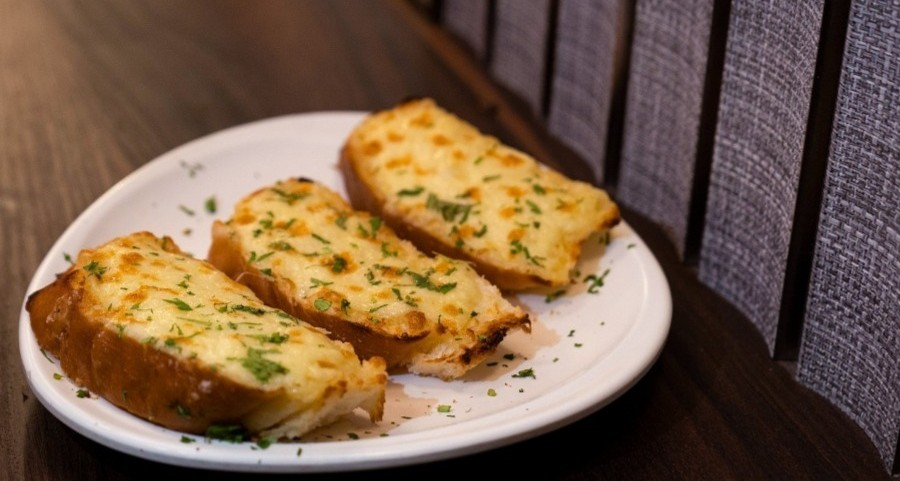

Fresh garlic bread that's a great buttery snack
Ingredients
- 1/2 cup butter
- 1 and 1/2 tablespoons of garlic powder
- 1 tablespoon dried parsley
- 1 (1 pound) loaf italian bread, cut into 1/2 inch slices
- 1 (8 ounces) package shredded mozzarella cheese
Steps
- Preheat the oven to 350 degrees F (175 degrees C).
-
Melt butter in a small saucepan over medium heat;
stir in garlic powder and dried parsley.
-
Place bread slices on a medium baking sheet. Using basting brush,
bush bread generously with melted butter mixture.
-
Bake in the preheated oven until lightly toasted, about 10 minutes.
-
Sprinkle bread with mozzarella cheese and any remaining butter
mixture. Continue baking until cheese is melted and bread is
lightly browned, about 5 minutes.
Return to top
Return to main page